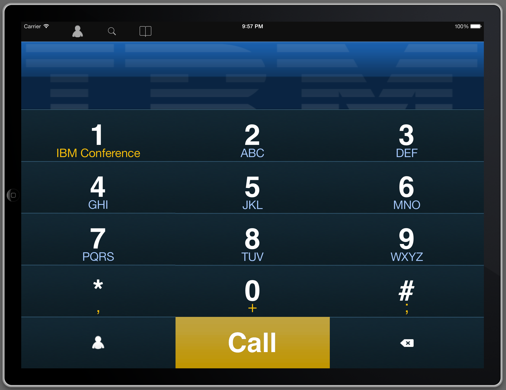

Delivering mobile strategy, security and services to our clients


the Internet of Things

the Internet of Things


...because of WeMo?s success, we are looking at ways to expand the platform to make it more robust and secure, as well as providing support for our development partners. This may mean that we need to secure the open protocols that are currently being used...


internet
gpio
usb devices


“ Geocities of Things ”
Andy Huntington

"Creating something personal, even of moderate quality, has a different kind of appeal than consuming something made by others, even something of high quality."

Node-RED is...
a light-weight, edge of network, application builder
easy to use, drag and drop interface
a tool that allows the developer to focus on the task at hand
no more  shaving
shaving
shaving
*pssst - do the first demo
A long time ago in a node-red far,
far away....
Inject node
Allows manual triggering of flows
Can be scheduled to automatically inject at fixed intervals
Debug node
Shows message content, either just payload or entire object in the debug sidebar
Function node
Runs user-defined js against the messages flowing past
Template node
Renders messages into a {{mustache}} template
TCP/UDP nodes
Connects out, or listens for incoming connections
HTTP nodes
Define http endpoints for incoming requests, or trigger gets of urls in the middle of a flow
MQTT Nodes
Publish and Subscribe nodes
Hardware nodes
Serial devices.
Raspberry Pi / BeagleBone Black GPIO pins
Storage nodes
MongoDB, Redis, local files
Social nodes
Twitter, irc, email, xmpp
Easy to wrap any npm module into a palette node*
* once we get the API documented
Each node defined in a pair of files:
.js : server-side behaviour
.html : appearance in editor & help